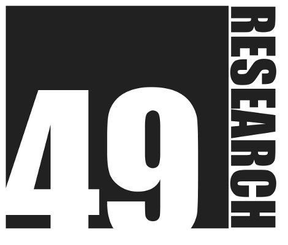
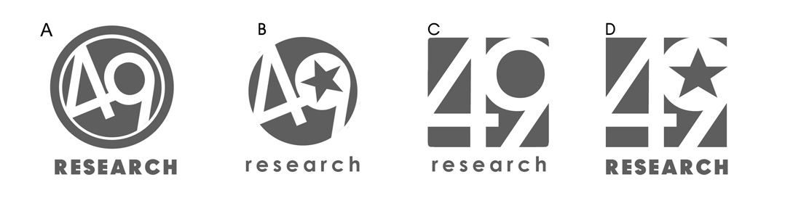

49 Research
What was my second consulting company.
49 Research was a software development company that I (Charles Iliya Krempeaux) founded in the year 2008 with a long-time friend, Radoslav Gazo.
49 Research's first three offices were located all in [[downtown-vancouver]].
49 Research Customers
49 Research had a number of customers. Some of those customers were:
- British Columbia Lottery Corporation (BCLC),
- Electronic Arts (EA),
- Neverblue Media,
- Petro-Canada,
- Small Business BC (SBBC),
- and many others.
49 Research Logos
49 Research had a number of different logos over the years.
I created its first logo:

Later, Radoslav Gazo and I decided we wanted a professional logo designer to create us a new logo. Here are some concept logos.

And this ended up being the (final) new logo design: